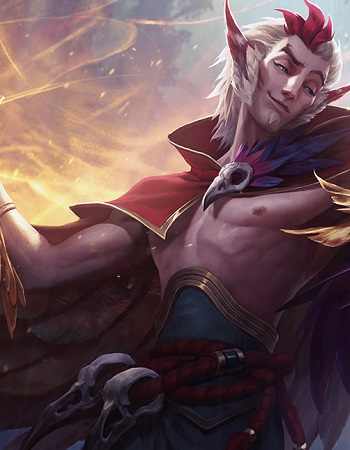
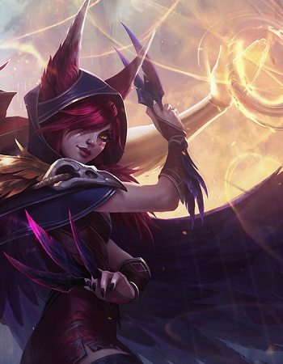
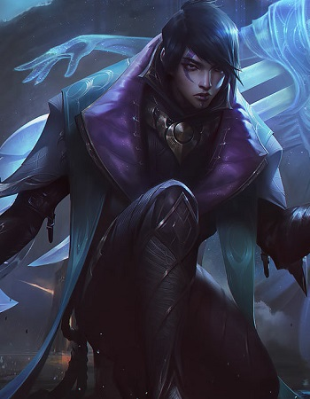
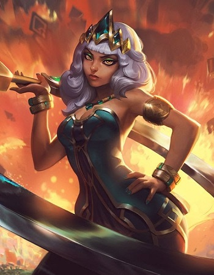
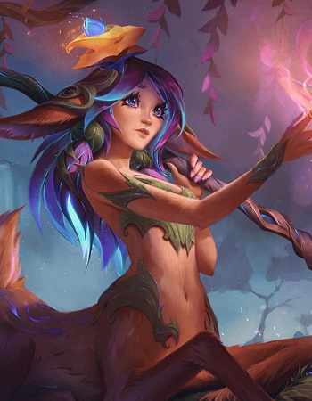
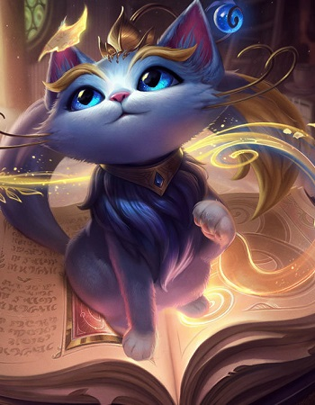
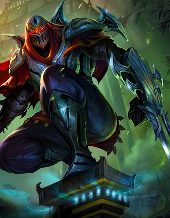
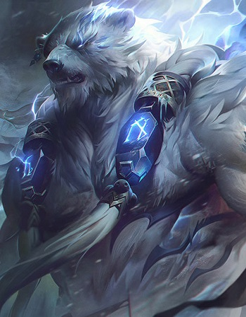

С детства обреченная спасаться от преследующего ее черного тумана, Сенна вступила в орден Стражей света. Она яростно сражалась со своим проклятием, но погибла, а ее душу поймал в свой фонарь жестокий призрак Треш. Однако Сенна не утратила надежды и внутри фонаря научилась управлять туманом. Она сумела вернуться в мир живых, необратимо изменившись. Ее оружием стали одновременно и тьма, и свет. Сенна обращает черный туман против самого себя и каждым выстрелом из каменного ружья освобождает заключенные в нем души.

Этот вастайи – обаятельный, самоуверенный, вечно создающий проблемы, величайший боевой танцор племени Лотлэн. Словом, Рэйкан. Когда-то ионийские горцы его хорошо знали за безрассудные гулянья, дикие попойки и еще более дикую музыку. Но Рэйкан оставил все прелести жизни странствующего артиста, когда повстречал бунтарку Шаю, и посвятил жизнь своей возлюбленной. Теперь они вместе стремятся освободить дикую магию Ионии и вернуть то, что принадлежит вастайи по праву.

Смертоносная и не знающая промаха, Шая – вастайи-бунтарка, которая в одиночку вступила в священную войну во имя спасения своего народа. Любого, кто встанет у нее на пути, Шая порежет на ленточки, ведь на ее стороне хитрость, быстрота, а еще острые, как бритва, перья. К счастью, защищая свой угасающий род, Шая сражается не одна: вместе с ней всегда и повсюду верный соратник и любовник Рэйкан. Вместе они намерены вернуть вастайи былую славу... какой ее представляет Шая.
Aphelios
Kiana
Lilliya

Афелий выходит из тени, которую отбрасывает лунный свет, и убивает врагов своей веры в зловещем молчании. Уверенность в своей правоте и пистолеты из лунного камня красноречивее любых слов. Афелий потерял способность говорить из-за яда, который принимает, чтобы его сестра Алуна, даже находясь в далеком святилище, могла указывать ему путь и создавать для него целый арсенал волшебного оружия. Пока над головой сияет луна, Афелий не одинок.

В самом сердце джунглей скрыт город Ишаокан. Принцесса Киана – последняя в очереди наследования, но она пробивается к престолу Юнталь, не щадя никого на своем пути. Она уверенно избавляется от соперников благодаря своей невероятной способности управлять стихиями. Сама земля беспрекословно выполняет приказы Кианы, потому она мнит себя величайшим элементалистом в истории Ишаокана и желает править не просто городом, а целой империей.

Сказочная лань Лиллия – это робкое дитя волшебных лесов Ионии. Она прячется от взора смертных, которые одновременно пугают и завораживают ее, и пытается понять, почему их сновидения больше не могут найти дорогу к Древу Грез. Вооружившись волшебным посохом, Лиллия странствует по Ионии в поисках забытых грез, чтобы помочь людям побороть свои страхи и разжечь искру в их душе. Только так она сама сможет обрести храбрость.
Yuumi
Zed
Volibear

Юми – волшебная кошка из Бандл Сити, фамильяр йордла-чародейки по имени Норра. Когда та таинственно исчезла, Юми стала хранительницей разумной Книги Пределов. Она путешествует сквозь страницы-порталы, пытаясь разыскать Норру. Без хозяйки Юми бывает одиноко, поэтому она ищет себе спутников и яростно защищает их сияющими магическими щитами. Волшебная кошка очень ценит простые жизненные радости – например, дневной сон и свежую рыбку. Книга пытается ее воспитывать, но на самом деле это не нужно, ведь Юми никогда не забывает о главной цели: вернуть свою подругу.

Жестокий и безжалостный Зед возглавляет орден Тени – организацию, которую он создал, чтобы превратить магическое и боевое искусство Ионии в оружие против ноксианских захватчиков. Во время войны отчаяние заставило его обратиться к темной духовной магии – могущественной, но разрушительной. Это позволило ему освоить тайную теневую форму. Зед в совершенстве владеет приемами запрещенной магии и может уничтожить любого врага своей родины или своего нового ордена.

Те, кто до сих пор чтят Волибира, считают его воплощением бури. Дикий, все разрушающий и невероятно упрямый, он пришел в тундру задолго до первых смертных и теперь ревностно охраняет морозный край, созданный им вместе с другими полубогами, его братьями и сестрами. Он ненавидит цивилизацию за то, что она делает людей слабыми, и борется за возвращение старых времен, когда природа была дикой, а кровь лилась рекой. Всякого, кто осмелится ему противостоять, Волибир сметет с дороги клыками, когтями и рокочущей яростью грома.